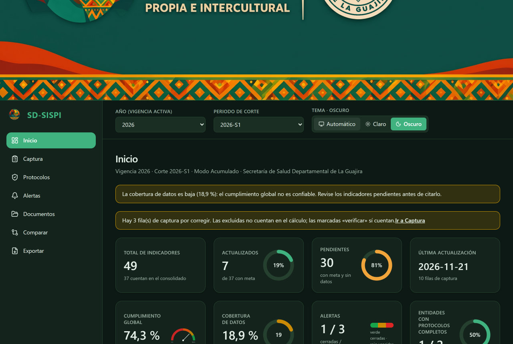
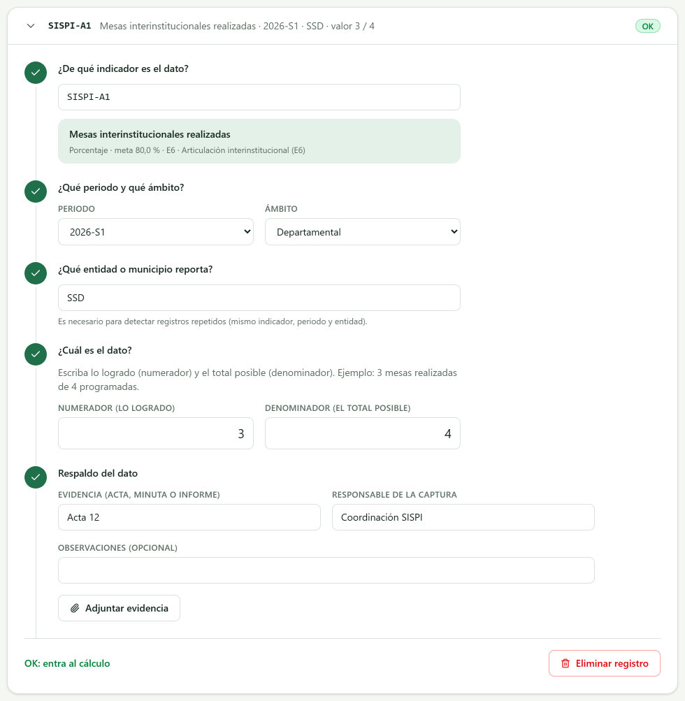
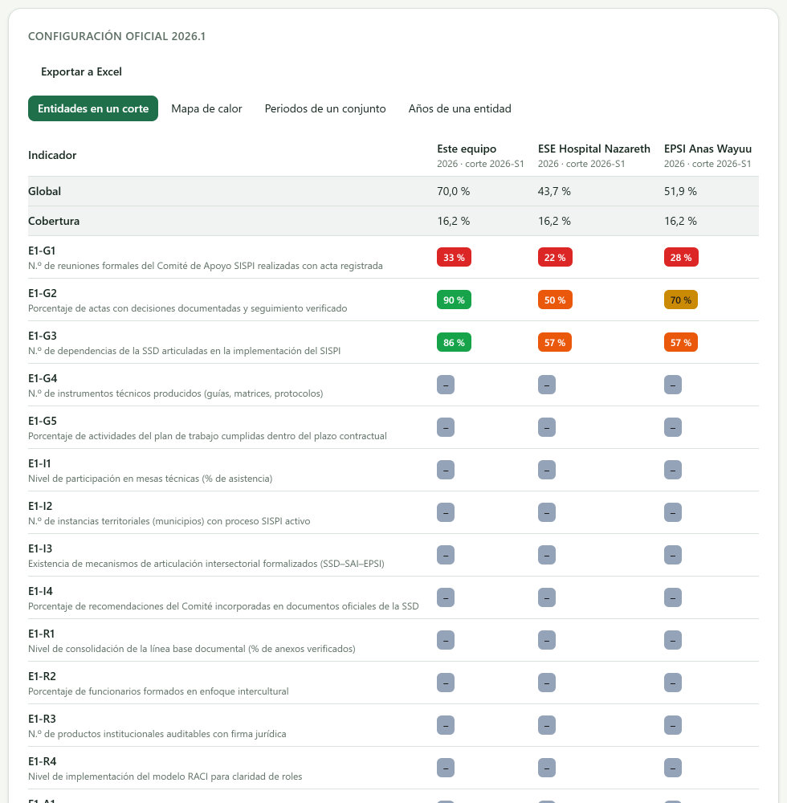
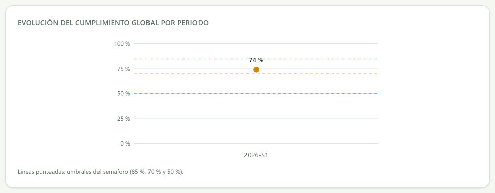
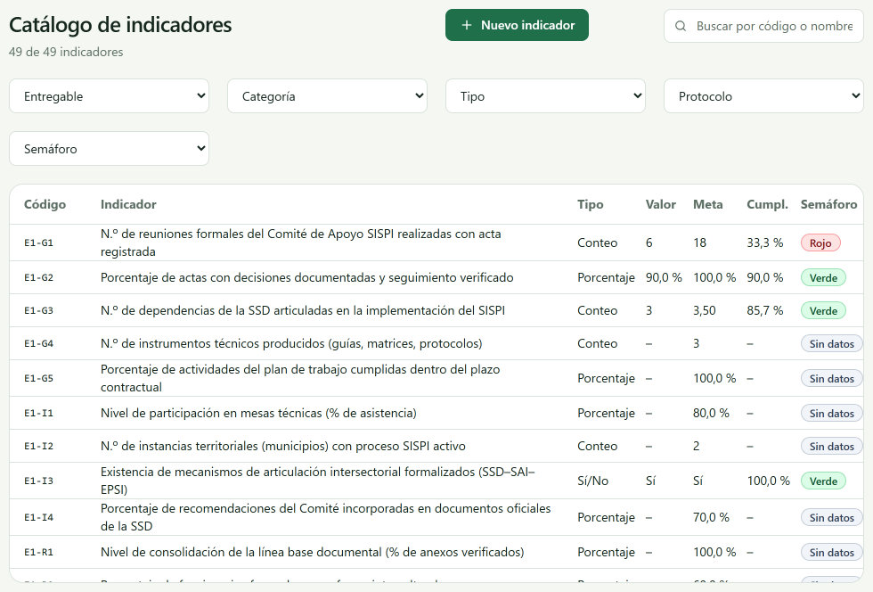

Descripción del Proyecto
Aplicación de escritorio para el seguimiento de los indicadores del Sistema Indígena de Salud Propia e Intercultural (SISPI) en La Guajira. Reemplaza el libro de Excel del tablero de control y su manual operativo con captura guiada de datos, cálculo automático de cumplimiento y semáforo, tableros con gráficos, comparación entre entidades y periodos, y exportación de reportes. Funciona 100 % local, sin Internet ni inicio de sesión. Proyecto en desarrollo: actualmente cuenta con una primera versión de prototipo.
Objetivos
- Reemplazar el libro de Excel del tablero de control por una aplicación dedicada
- Validar la captura de datos según las reglas del manual operativo
- Calcular cumplimiento, cobertura y semáforo de cada indicador
- Facilitar el seguimiento por entidad, periodo y protocolo
Resultados
- Primera versión de prototipo funcional
- Captura por pasos con autoguardado y validación
- Tablero de inicio con gráficos de cumplimiento, cobertura y alertas
- Comparación entre entidades, periodos y años
- Exportación a Excel y PDF, y respaldos automáticos
Galería




